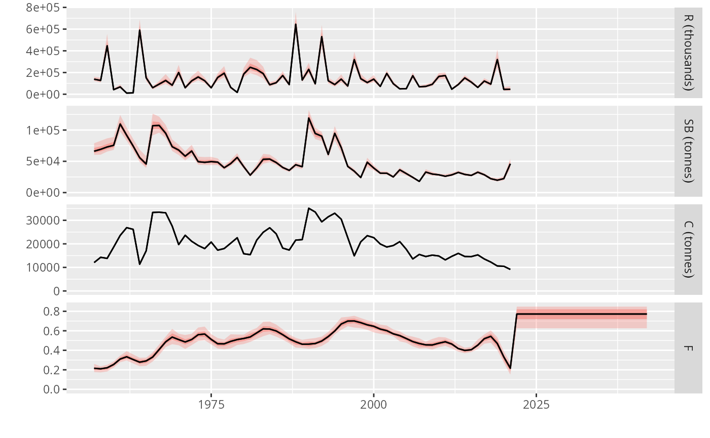

Performs a short term forecast (STF) for the target fishing mortality to obtain the corresponding catch.
tac.is(
stk,
ctrl,
args,
output = "catch",
recyrs = -2,
Fdevs = fbar(fut) %=% 1,
dtaclow = NA,
dtacupp = NA,
fmin = 0,
reuse = TRUE,
initac = metrics(stk, output)[, ac(iy - 1)],
tracking
)The perceived FLStock.
The fwdControl output by the hcr step, target must be 'fbar'.
The MSE run arguments.
Years to use for geometric mean recruitment if projection. Defaults to all years minus the last two.
Deviances on the fbar input to incorporate error and bias when MP is run using the pseudo-estimators 'perfect.sa' or 'shortcut.sa'.
Limit to decreases in output catch, as a proportional change (0.85 for 15%). Applied only when metric > lim, as set by 'hcr' step.
Limit to increases in output catch, as a proportional change (1.15 for 15%). Applied only when metric > lim, as set by 'hcr' step.
Minimum fbar to apply when catch change limits are use.
Initial catch from which to compute catch change limits. Defaults to previous observed catch.
The tracking object.
A fwdControl object obtained from the 'hcr' step is applied in the
management year (ay + mlag) or years (seq(ay + mlag, ay + mlag + freq).
An assumption is made on the mortality in the assessment year (ay), which
becomes the intermediate year in this projection. By default this is set
to Fbar = Fsq, that is, the same fishing mortality estimated in the
last data year (ay - data_lag).
The projection applies a constant recruitment, equal to the geometric mean
over an specified number of years. By default all years minus the last two
are included in the calculation. An specific set of years can be employed,
by specifying a character vector of year names, or two values can be given
for the number of years to be inlcuded, counting from the last, and how many
years to exclude at the end. For example, c(30, 2) will use the last 30
years but excluding the last two, usually worst estimated.
data(sol274)
#> Warning: namespace ‘AAP’ is not available and has been replaced
#> by .GlobalEnv when processing object ‘om’
# Setup control with tac.is
control <- mpCtrl(list(est=mseCtrl(method=perfect.sa),
hcr=mseCtrl(method=hockeystick.hcr,
args=list(lim=0, trigger=4.3e5, target=0.21)),
isys=mseCtrl(method=tac.is, args=list(recyrs=-3, output='landings'))))
# Run MP until 2025
run <- mp(om, oem, ctrl=control, args=list(iy=2021, fy=2027))
#> 2021 - 2022 - 2023 -
#> Warning: Selected elements do not form a coherent 6D array
#> 2024 -
#> Warning: Selected elements do not form a coherent 6D array
#> 2025 -
#> Warning: Selected elements do not form a coherent 6D array
#> 2026 -
#> Warning: Selected elements do not form a coherent 6D array
#>
# Plot run time series
plot(om, TAC.IS=run)
#> Warning: Removed 6300 rows containing non-finite outside the scale range
#> (`stat_fl_quantiles()`).
#> Warning: Removed 6300 rows containing non-finite outside the scale range
#> (`stat_fl_quantiles()`).
#> Warning: Removed 6300 rows containing non-finite outside the scale range
#> (`stat_fl_quantiles()`).
#> Warning: Removed 6300 rows containing non-finite outside the scale range
#> (`stat_fl_quantiles()`).
